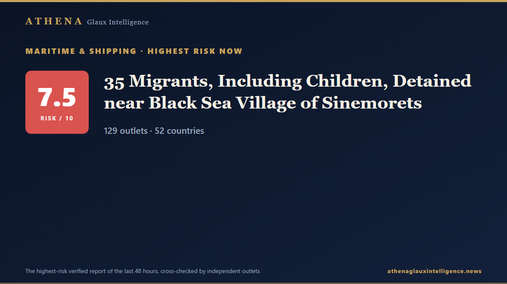

Risk 7.2Elevated
Geopolitics, the economy and maritime shipping — cross-checked across countries.
Geopolitics
All geopolitics >Highest risk now

Rising riskRisk up in the last 24 hours
Maritime & shipping
Maritime desk >Highest risk now
Risk 7.5Elevated
35 Migrants, Including Children, Detained near Black Sea Village of Sinemorets
Read the evidence ›
Rising riskRisk up in the last 24 hours
Every headline, checked across countries.
ATHENA Glaux reads 744 news outlets worldwide. A story becomes a verified event only when independent outlets report it. Each event shows who was first and a risk score with its reasons.
1,411events in 24 hours
744outlets followed
43minutes between updates
Earthquake or flood near you this week?
Type your town and see the earthquakes, floods, storms and official warnings near it, with a 72-hour emergency kit checklist. Free, no sign-up, and your place stays on your device.
Reports drift in from independent outlets - when two meet on the same story, it becomes a verified event.
How ATHENA checks a story
- CollectReports arrive from independent outlets in many countries.
- MatchWhen two outlets meet on the same story, it becomes a verified event.
- ExplainEach event shows who was first, how far it spread and why the risk is what it is.
Global risk outlook
Weekly and monthly reviews: the highest-risk events, the trends by domain and region, and what to watch next.
Read the outlook ›Daily briefing
The ten most important world events of the day, the rising risks and the new events, with every number explained.
Open today's briefing › Business
BusinessHuawei convicted of money laundering, conspiracy to steal trade secrets, and fraud by US jury
A jury found Huawei guilty on 10 out of 12 counts, although it was acquitted of racketeering and conspiracy to obstruct justice. from Tom's Hardware
7.8Importance
3.1Risk · moderate
86%Confidence
Technology & Cyber
Jensen Huang is back, but Nvidia still has to deal with his baggage
Massive data centers in Southeast Asia exploited a gap in U.S. sanctions, providing crucial computing power for Chinese companies and a cover for alleged chip smuggling. from to vima
Technology & Cyber
China's Shenzhou-24 spaceship docks with Tiangong space station
China to launch Shenzhou-24 crewed spacecraft on November 25. from CGTN (China)
Sponsored
Cybernetics and Artificial Intelligence Lab Welcome to the Cybernetics and Artificial Intelligence Laboratory, established at the Department of Business Administration of the National and Kapodistrian University of Athens. The lab is headed by Professor Dimitrios Thomakos. The lab aims to do research that can be published in top venues. Our research uses tools and methods of Artificial Intelligence, and lies in the following areas: - Forecasting - Decision making - Cyber security - Finance We are always looking forward to collaborating with exceptional students!
Learn more – Cybernetics and Artificial Intelligence LabShips at the world's chokepoints now
Live AIS counts. Tap or hover a bar for the detail.
Latest reports
Israeli opposition advances October 7 attack probe opposed by Netanyahu
Britain moving military aircraft to hangars at night over possible drone threats, media reports say
Silver price sinks to 14-month low on firm US Dollar ahead of PCE inflation data
Five Russian military jets hit in airfield strike, says Ukraine
Unclassified CIA system breached in cyberattack: Report
PIF secures inaugural S&P ‘A+’ credit rating with stable outlook
South Africa's Ramaphosa wins court battle over impeachment threat
Jordan sentences man to death over attack that killed officer
Geopolitics
Poland Urges NATO to Down Russian Missiles Over Ukraine
Poland has asked NATO allies to consider intercepting Russian missiles over Ukraine if they are heading toward alliance territory, Bloomberg reported. from Kyiv Post
Geopolitics
Bangladesh’s ousted leader Sheikh Hasina plans to return from exile on December 16
Sheikh Hasina, who was ousted as Bangladesh’s prime minister more than two years ago, said Tuesday that she plans to return home from exile in India on Dec. from DVB English
Geopolitics
Iran says it is prepared to withstand US blockade, seeks to curb price rises
DUBAI, Nov 25 (Reuters) - Iran's first vice president said on Wednesday Tehran was not concerned about a US naval blockade as there had been a significant increase in cargo through other borders, and… from Al-Monitor
Geopolitics, Politics & Security
More ›Wars & conflicts
Interactive: 720,000 Russian soldiers killed? Who are the men dying in Putin’s war
Western officials estimated in August that the Kremlin was losing 6,000 more troops per month than it could enlist. from The Independent
- Elections & politics
US Midterm Elections and South African Implications
- Elections & politics
Trump on ’60 Minutes’ Reflects on Midterm Loss, Death and Forgiveness: ‘I Do Hate Some of My Enemies’
- Wars & conflicts
Israeli strike kills Hamas official, his wife and children
- Diplomacy & summits
One of Ireland's largest extras agencies is ending operations in the Republic over new rules
Economics, Finance & Markets
More ›Forecasts & recession risk
Macy’s Thanksgiving Day Parade: 5 Facts You May Not Know
Hoda Kotb takes AD behind the scenes of the historic 100th parade in a new video. from Architectural Digest
- Stocks, bonds & markets
SK Hynix to become Kioxia's top shareholder with bond conversion
- Inflation & interest rates
US inflation rises further in October
- Housing & real estate
Israeli Developer Simon Aykut Freed on Health Grounds After Transfer from Cyprus
- Forecasts & recession risk
Will weather ground Macy’s Thanksgiving Parade balloons? Official floats start time change
Trade, Industry & Infrastructure
More ›Shipping & ports
Maersk Orders 12 Ultra-Large Dual-Fuel Container Ships
Maersk has ordered 12 ultra-large container ships scheduled for delivery in 2030 and 2031, which will become the biggest vessels in its fleet, a company spokesperson said on Tuesday.The vessels, each… from MarineLink
- Aviation, rail & road
CJP’s Saurav Das moves Delhi HC after being stopped from travelling to UK
- Agriculture & food security
Wetang’ula reveals how MP was caught on CCTV stealing colleague’s phone in parliament
- Shipping & ports
IRGC Reports Three Tankers Exploded in Hormuz After Hitting Mines
- Tariffs & export controls
US Proposes 25% Tariff On India. It Could Come Down With Trade Deal
Energy, Resources & Environment
More ›Extreme weather & natural disasters
California braces for flooding threat from huge tides, El Niño
Californians are preparing for a confluence of exceptionally high tides and El Niño-fueled weather that threatens coastal areas with extreme flooding during the busiest U.S. travel week of the year. from Phys.org
- Pollution & biodiversity
Everything you need to know about the U.S. Army’s 5-ton lead azide explosion in Iowa today
- Pollution & biodiversity
Army will blow up ammunition cache in Iowa today
- Extreme weather & natural disasters
29 miners believed trapped by flooding in an unauthorized gold mine in Indonesia
- Climate & climate policy
COP31 chief blames EU for failure to reach climate deal
Technology, AI & Cybersecurity
More ›Artificial intelligence
AI consumes less water per dollar spent than almond milk or golf: Report
The report puts US$25 (S$32) a month of AI spending at about 1.9 gallons of water consumption. from The Straits Times
- Media & disinformation
Ukrainian journalists outnumbered 30 to 1 by Russian propagandists during Oleshky evacuation, reporter says
- Software & cloud
Microsoft Declares ‘Code Red’ After Historic 24-Hour Outage
- Space & satellites
Using Lunar Craters as Free Radiation Shields for Moon Base Nuclear Reactors
- Chips & computing
Nvidia board joins Jensen Huang under scrutiny after reinstating embattled CEO
Business, Companies & Investment
More ›Corporate strategy
Police declare Arise News owner Nduka Obaigbena, others wanted for threatening FirstBank CEO
Mr Nduka Obaigbena claimed he did not receive an invitation concerning any investigation from the police or any law enforcement agency at any of his addresses. from Peoples Gazette
- Corporate strategy
Eurostar services between London and Paris cancelled after staff go on surprise strike
- Sectors & company risks
Best Black Friday 2026 3D Printer deals live
- Corporate strategy
Amazon to sell cars online in UK from next year
- Boards & executives
‘Minor’ turn in Tiger Shroff attack case, 17-year-old sent to Juvenile Justice Board
Accidents & emergencies
More ›Accidents & emergencies
Gordon Ramsay named new host of BBC's Top Gear
Motoring show set to return in 2028, six years after Andrew Flintoff's crash halted production. from Anadolu Agency (English)
- Accidents & emergencies
10 killed, 7 injured in deadly road collision in Egypt's Aswan
- Accidents & emergencies
Bristol City 1-1 Wrexham recap: Reaction after Cam Pring fires Robins to draw at Ashton Gate
- Accidents & emergencies
At least 3 killed, 14 injured after under-construction building collapses near Karachi's Baloch Colony
- Accidents & emergencies
Plane crash off the coast of Mississippi kills 6, including 2 children
Three ways to read today
Start with the one that fits your timeVerified events
Ranked by how widely they are reported
- What NVIDIA CEO Jensen Huang will face when he testifies before US Congress186 outlets · 56 countriesRisk 4.3
- Ukraine Says Drone Strike That Sank Russian Corvette Merkury In Libya Was Self-Defence121 outlets · 48 countriesRisk 6.1
- Two more oil tankers explode in Strait of Hormuz unsafe route87 outlets · 33 countriesRisk 4.8
- Global stocks rally as Nvidia rebound lifts Asian markets79 outlets · 32 countriesRisk 3.1
- Jensen Huang lost $8.2b when he quit Nvidia, gained $33.9b on his return76 outlets · 30 countriesRisk 4.0
Assessment Desk
Ask a question and read a reasoned assessment of a leading story, with what would prove it wrong.
Open the Assessment Desk ›Today in numbers
| 22:00 | 452 |
|---|---|
| 23:00 | 457 |
| 00:00 | 469 |
| 01:00 | 438 |
| 02:00 | 223 |
| 03:00 | 545 |
| 04:00 | 431 |
| 05:00 | 367 |
| 06:00 | 282 |
| 07:00 | 351 |
| 08:00 | 325 |
| 09:00 | 376 |
| 10:00 | 497 |
| 11:00 | 1110 |
| 12:00 | 1339 |
| 13:00 | 618 |
| 14:00 | 878 |
| 15:00 | 800 |
| 16:00 | 681 |
| 17:00 | 643 |
| 18:00 | 503 |
| 19:00 | 596 |
| 20:00 | 365 |
| 21:00 | 248 |
Risk of today's events
Geopolitics89Economy & Markets40Trade & Industry39Business36Technology & Cyber31Energy & Environment24Maritime6
Emerging signals
- Sudden surge · Active nowTariffs, export controls and trade restrictions
- Sudden surge · Active nowZeeshan Ali
- Sudden surge · Active nowSaurav Das
- Sudden surge · Active nowHuawei
- Sudden surge · Active nowCartagena
Official warnings
- M 6.5 - Vanuatu regionM6.5 · USGS ·
- M 5.9 - 238 km SW of Yanglong, ChinaM5.9 · PAGER yellow · USGS ·
Stay informed
ATHENA Weekly Risk Picture
The week's biggest geopolitical, economic and shipping risks, cross-checked and scored.
Every Friday at 08:00 Athens time · free · in English
Subscribe freeATHENA on Telegram
News the moment it is published: breaking events at risk 6 or more, an hourly round-up, risk-tracker updates and the daily briefing at 10:00.
Free · posts in English · leave at any time
Join the channelSign-up is handled by beehiiv with double opt-in: nothing you type is sent to ATHENA, and every issue has an unsubscribe link.
Risk trackers
More ›Strait of HormuzRisk 5.112 new this week · down from 18 the week beforeRed Sea shippingRisk 6.716 new this week · down from 47 the week beforeGreece–Turkey relationsRisk 3.77 new this week · about the same as the week beforeCyprusRisk 3.814 new this week · about the same as the week beforeSanctions on RussiaRisk 6.816 new this week · about the same as the week beforeRussia–Ukraine warRisk 7.5219 new this week · down from 269 the week beforeIsrael, Gaza & the West BankRisk 6.874 new this week · down from 94 the week beforeTaiwan StraitRisk 2.710 new this week · down from 13 the week beforeOil & gas pricesRisk 4.230 new this week · down from 36 the week beforeSuez CanalRisk 0.00 new this week · down from 3 the week beforeTurkish StraitsRisk 0.00 new this weekPanama CanalRisk 0.00 new this weekShadow fleetRisk 2.72 new this week · down from 4 the week beforeBlack Sea shippingRisk 7.51 new this week · down from 5 the week beforeCentral banks & interest ratesRisk 4.141 new this week · about the same as the week beforeGreek economyRisk 0.88 new this week · up from 6 the week beforeEastern Mediterranean energyRisk 0.02 new this week · down from 4 the week beforeBalkansRisk 4.911 new this week · down from 28 the week beforeMediterranean migrationRisk 1.21 new this week · down from 3 the week before
Global risk outlook — week 48, 2026 (23–29 Nov) ›
Around the world
North AmericaWhat NVIDIA CEO Jensen Huang will face when he testifies before US Congress
59 events
Middle East & North AfricaSaudi Arabia offers condolences to Turkiye after helicopter crash kills 5
59 events
Southeast AsiaTrump says trade deal reached between the U.S. and the Philippines
55 events
South AsiaUS proposes new tariffs on 14 trading partners, including China and the EU
54 events
Sub-Saharan AfricaHuawei convicted of money laundering, conspiracy to steal trade secrets, and fraud by US jury
44 events
Russia & EurasiaRussian strikes kill seven in Ukraine as Kyiv hits three refineries
44 events
East AsiaS. Korean won weakens slightly against U.S. dollar on foreign outflows
41 events
Latin America & CaribbeanColombia rescues all hostages held at Cartagena supermarket
26 events